Playable prototype scene
BattlePhaseTest1 is the current Unity battle prototype. It auto-starts a one-lane mass fight using real spawned units.
Project whiteboard for partner review
Solo-dev 2D strategy/autobattler concept
The player runs a necromancer lab, stitches zombies from modular corpse parts, and sends those designs into automatic RTS-style squad battles. The game is about engineering bodies, learning from fights, and improving designs between runs.
This is the current practical state for partner review. The battle prototype is now runtime gameplay, not only concept art.
BattlePhaseTest1 is the current Unity battle prototype. It auto-starts a one-lane mass fight using real spawned units.
The scene spawns 70 individual GameObjects: 34 player zombies and 36 enemies. They are not painted crowd/blob images.
Units move as loose blobs, separate from allies, find targets, attack on cooldown, take damage, die, and use Y-sorting.
Sprites are placeholders, battle logic is one broad lane, background art is first-pass generated, and there are no health bars yet.
Open Unity, load BattlePhaseTest1, press Play, and confirm the console stays clean after the Tom_Code folder move.
Before pushing Unity work, fix the Unity .meta tracking rules. Unity assets must keep their meta files in Git.
This keeps partner-authored code separate from Tom/Codex-created systems.
All new AI-assisted code goes under E:\UnityProject\TD Game\Assets\_Scripts\Tom_Code.
Tom_Code/BattlePhase/ contains the runtime battle prototype. Tom_Code/Rigs/Zombies/ contains the modular zombie rig helper.
Root scripts outside Tom_Code should be treated as partner-owned unless the team explicitly agrees otherwise.
Do not edit partner scripts unless required for compilation or explicitly requested. New Codex systems should be clearly sorted under Tom_Code.
The whole game should stay readable as a repeatable lab-to-battle cycle.
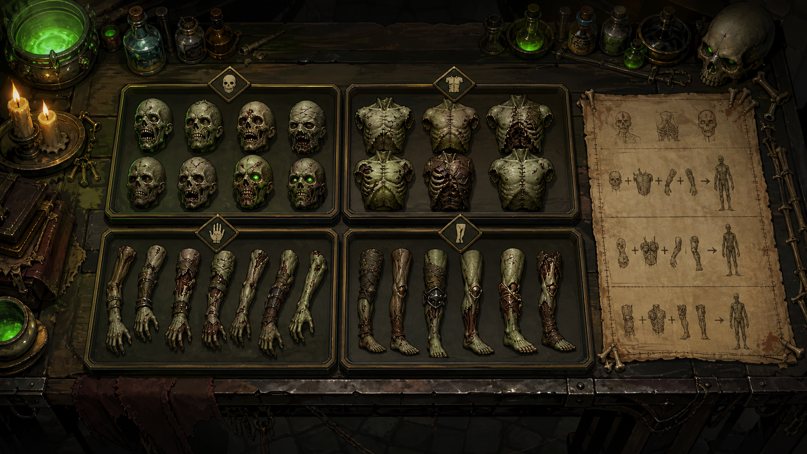
Pick from owned heads, torsos, arms, separate legs, and mutations.
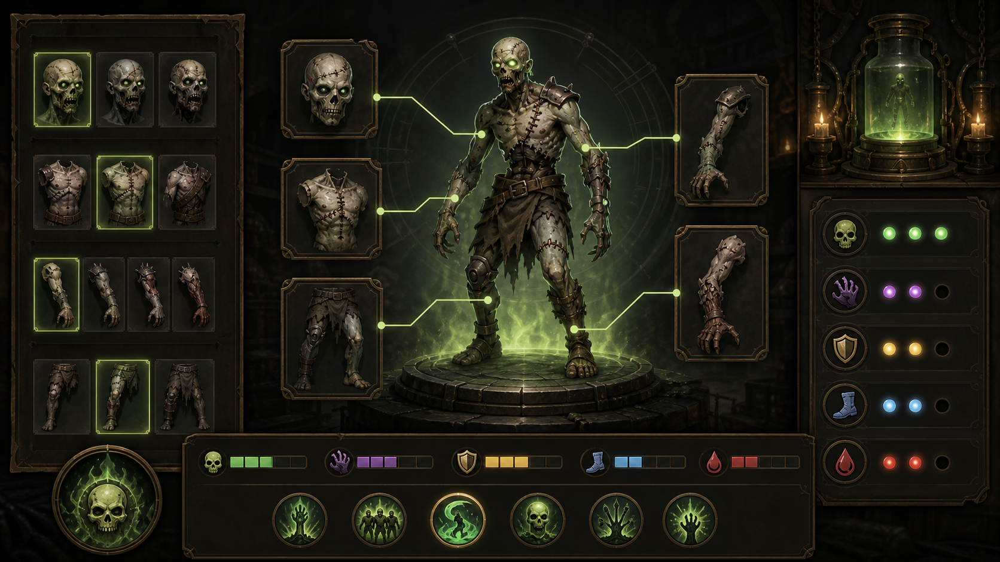
Preview the body, compare stats, and save the design.
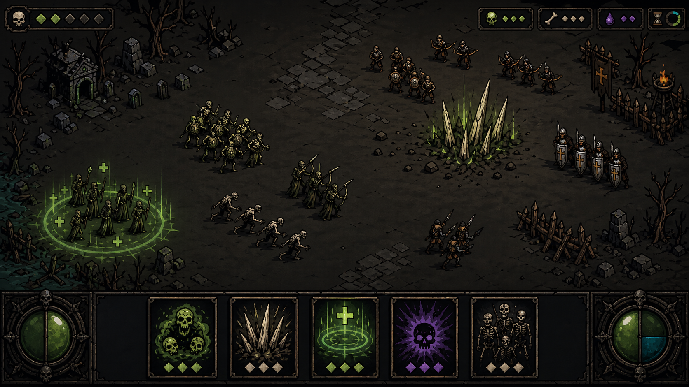
Before battle, the player chooses where to tip units in. Once fighting starts, units merge into loose RTS-scale blobs that move, block, cast, and fight automatically.
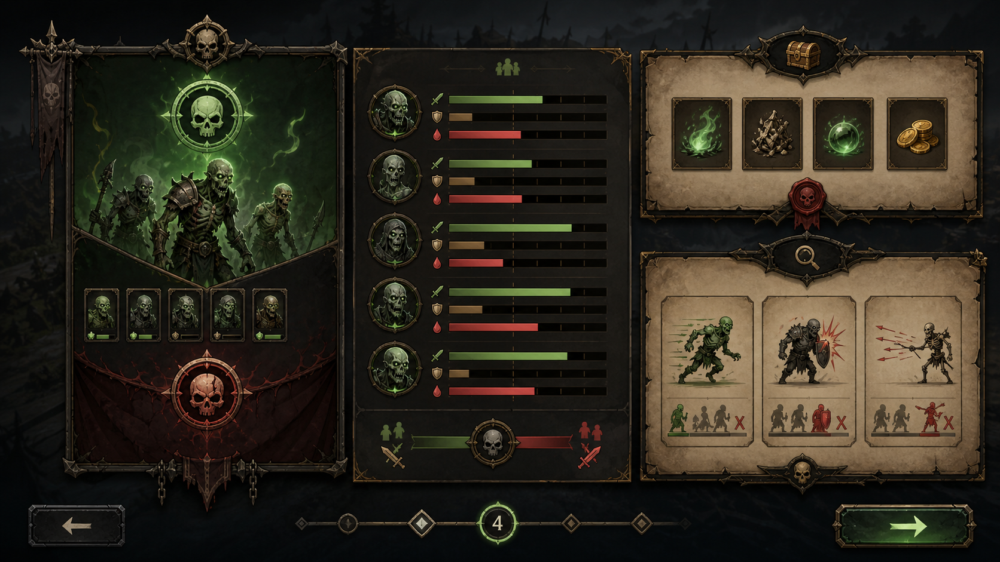
See what failed: speed, armor, range, plague, sustain, or damage.
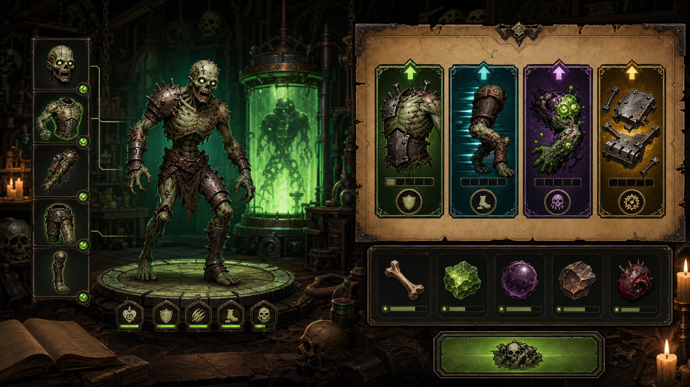
Unlock parts, upgrade pieces, mutate bodies, and try again.
This is the practical project order. Each step should produce something testable.
These are the systems the project needs. The MVP builds the left side first.
Hub for assembly, inventory, research, upgrades, and battle selection.
Slot-based body builder with live preview, stat comparison, and effects.
Owned parts, locked parts, duplicate salvage, rarity, level, and family tags.
Automatic RTS-style squad battle with movement, targeting, attacks, statuses, spells, and results.
Research nodes, family unlocks, rewards, part upgrades, and battle completion.
JSON-style definitions for parts, enemies, encounters, effects, rewards, and balance.
The lab should feel like a useful workshop: side-view zombie construction, inventory, stats, and a clear start battle action.
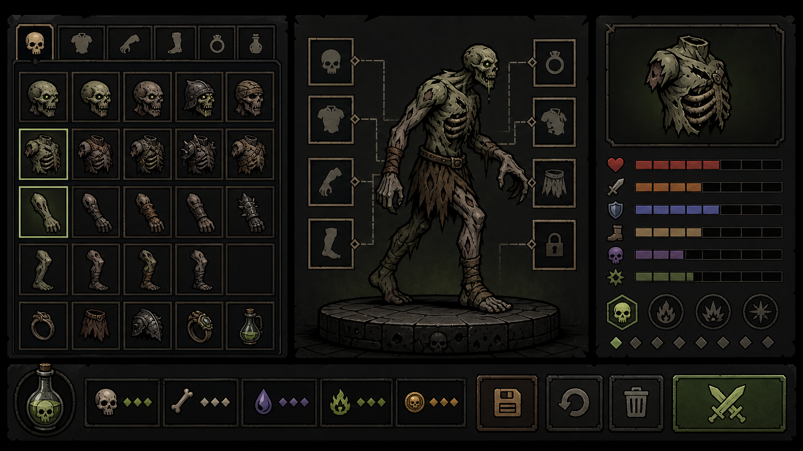
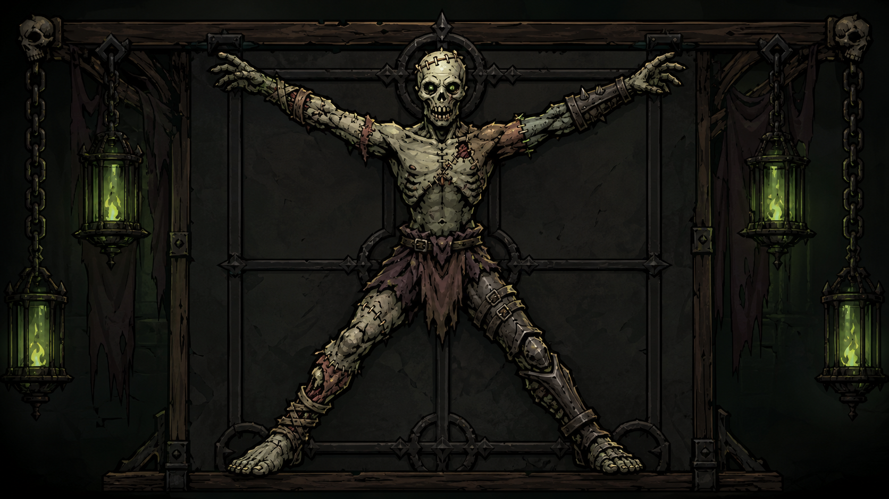
High-angle RTS-style automatic combat. Current MVP is one broad runtime lane with individual units forming readable battle blobs.
Units are real GameObjects. They spawn from both sides, move into loose blobs, target enemies, attack, die, and resolve automatically.
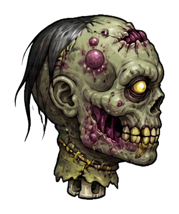
HeadTargeting, intelligence, focus, behavior modifiers, and visual identity.
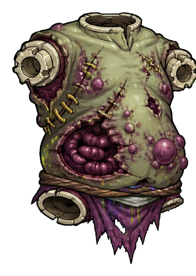
TorsoVitality, armor, archetype mass, scaling, and battle body silhouette.
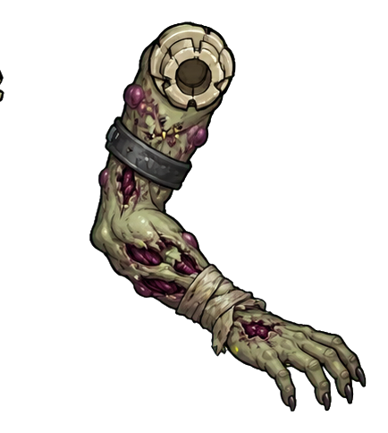
Front ArmMain active ability: claw, bow, staff, heal, spell, or heavy attack.
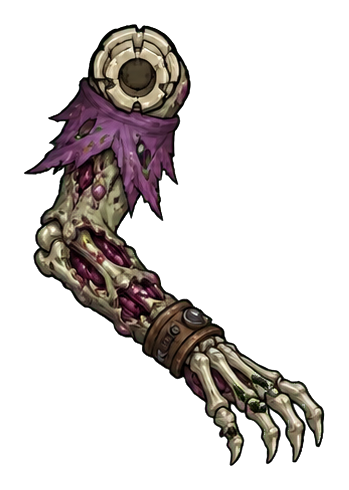
Back ArmOffhand shield, relic, support tool, secondary attack, or passive boost.
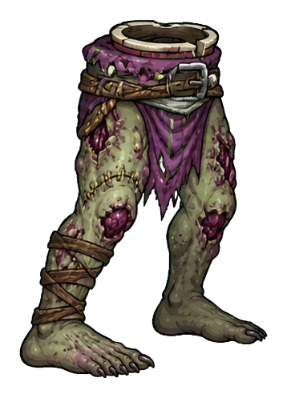
Front LegSpeed, dexterity, engage timing, and front movement silhouette.
Speed, stability, knockback resistance, and movement support.
The whole concept depends on reusable modular parts, not unique sprites for every combination.
Side-view paper-doll zombie rig for construction and inspection. It can show exact modular body parts.
Battle art now has generated layered battlefield assets and four placeholder moving unit sprites. These are production-prototype assets, not final art.
Stats and tags create roles. Shield plus healing staff can become a tank healer; bow plus relic can become ranged support.
Future AI assets should use hand-drawn stick/pivot guides for pose, proportion, part placement, and camera angle.
Lab modular zombies can use a dark necromantic iron frame under body parts to hide seams and make odd limb combinations feel intentional.
The first playable version should prove four clear battlefield jobs. These are not fixed classes; they are examples created from modular parts.
Example parts: brute torso, claw arm, shield or hook offhand, heavy legs.
Example parts: dexterity head, light torso, bow arm, relic offhand, runner legs.
Example parts: scholar head, caster torso, plague staff arm, relic offhand, slow stable legs.
Example parts: focus head, scholar torso, healing staff arm, relic or lantern offhand, careful legs.
The player can still combine roles. Shield plus healing staff becomes a tank healer. Bow plus relic becomes ranged support. Caster torso plus claw arm becomes a risky battle mage. The role cards above are teaching examples, not hard class locks.
Rough solo-dev schedule. Dates can shift, but the dependency order should stay.
Use this as the short partner handoff list.
Avoid Tom_Code unless coordinating with Tom. Partner-owned scripts can stay outside that folder.
Open BattlePhaseTest1, verify camera, prefab references, play-mode unit spawn, and a clean console.
Review PART_STAT_TAG_SYSTEM.md and help define the first MVP heads, torsos, arms, legs, and mutations.
Follow the approved graphic style, camera rules, stick/pivot guides, and iron-frame modular lab rig idea.
Fix Unity .meta tracking before pushing Unity assets. Do not rely on Unity files without their meta files.
Next visible improvement should be health bars, hit feedback, or damage numbers so battle results become readable.
Only consider multiplayer if early access proves the solo game has strong retention.
Two players bring zombie designs, spawn squads from opposite sides, and automatic RTS-style combat determines whose corpse-engineering is stronger.
Budget Duel: both players build within the same point budget so PvP does not become unfair account progression.
No accounts, matchmaking, servers, rankings, anti-cheat, or real-time sync in the first version.
Keep battles deterministic and part data clean. That helps replays and multiplayer later without turning MVP into a networking project.
These ideas can be good later, but they are dangerous before the core loop is proven.
Three short battles are enough for the first playable slice.
Use simple upgrades and one mutation slot before recipes and experiments.
The production plan must survive hundreds of combinations.
Use a small controlled battlefield before large maps, multiple lanes, or free-form RTS control.
Multiplayer is a later expansion, not the first product.
Effects, failure, and counters must be visible to the player.